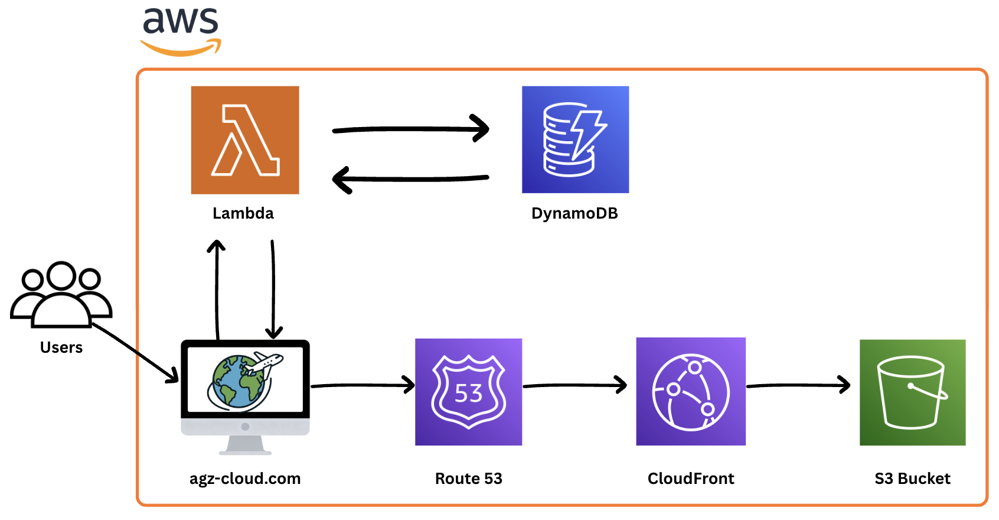

👋 Hi, I'm Alec!
& I’m an aspiring
🎉 CONGRATS !!
You're person number ... to view my cloud hosted resume!
Don’t believe me? Just reload the page to see for yourself!
Education
University of Illinois Urbana-Champaign (UIUC)
Major: Information Sciences (B.S.)
Minor: Computer Science
Expected graduation: May 2026
About Me
My passion for learning was ignited during my childhood spent living overseas across four different continents (Africa, South America, Asia, North America). However, my interest in technology began while observing my father who was a marine veteran in the IT field for the government.
Seeing how technology supports real-world operations left a lasting impression on me. Since then, I’ve pursued that interest through multiple internships across cloud operations, DevOps, and pre-sales engineering.
I’ve had the opportunity to work at Cisco, Hunter Strategy Consulting, and within a fast-growing e-commerce organization where I developed hands-on experience with cloud and infrastructure technologies.
These experiences showed me how much I enjoy solving real problems with technical solutions, especially when technology is used to support people and businesses at scale.
About This Project

Services Used:
- Amazon S3
- CloudFront
- Route 53
- AWS Certificate Manager
- AWS Lambda
- DynamoDB
- Terraform
- GitHub Actions